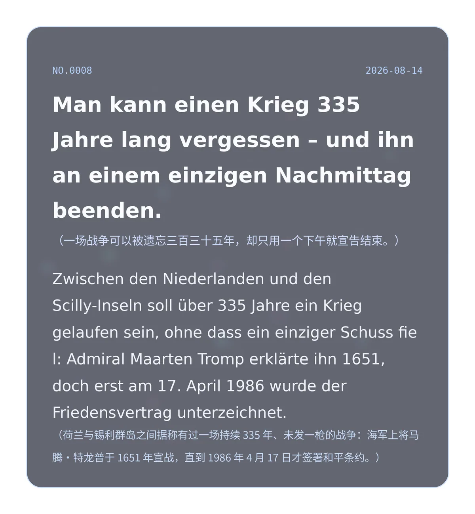

Man kann einen Krieg 335 Jahre lang vergessen – und ihn an einem einzigen Nachmittag beenden. （一场战争可以被遗忘三百三十五年，却只用一个下午就宣告结束。）
Zwischen den Niederlanden und den Scilly-Inseln soll über 335 Jahre ein Krieg gelaufen sein, ohne dass ein einziger Schuss fiel: Admiral Maarten Tromp erklärte ihn 1651, doch erst am 17. April 1986 wurde der Friedensvertrag unterzeichnet. （荷兰与锡利群岛之间据称有过一场持续 335 年、未发一枪的战争：海军上将马腾·特龙普于 1651 年宣战，直到 1986 年 4 月 17 日才签署和平条约。）
350780d4d786139f冷知识由执笔的模型自行查证。逐条断言、来源与所引原句存档在纯文字副本里，未经程序逐字校验，留作事后核实。